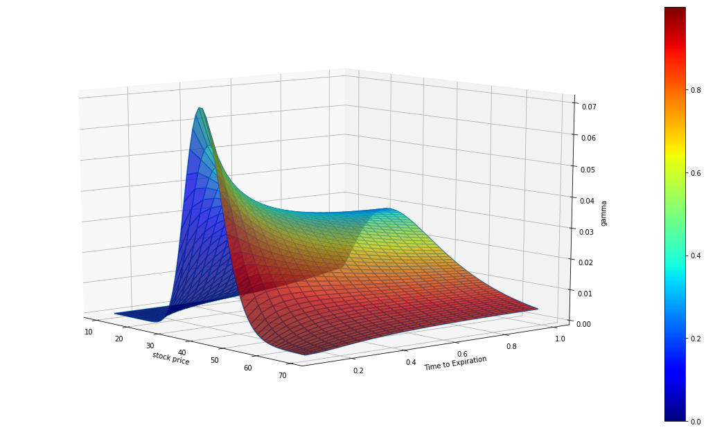
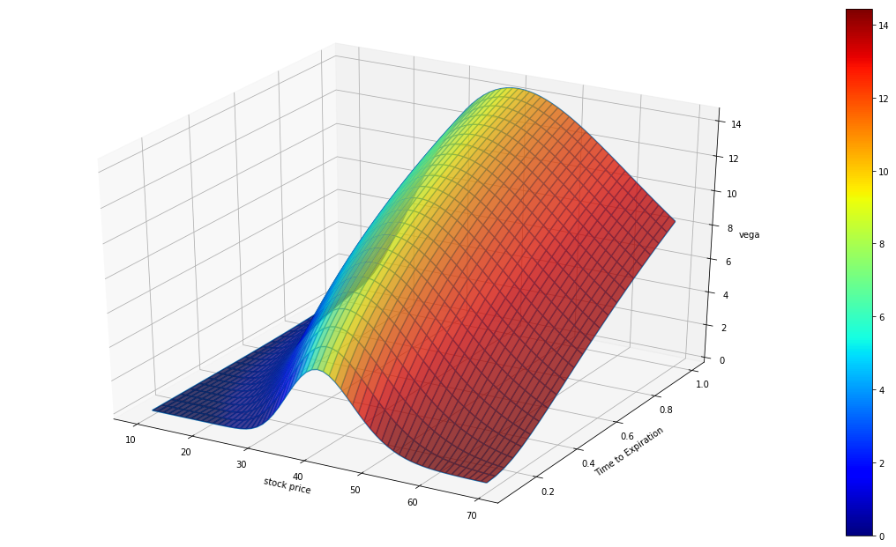
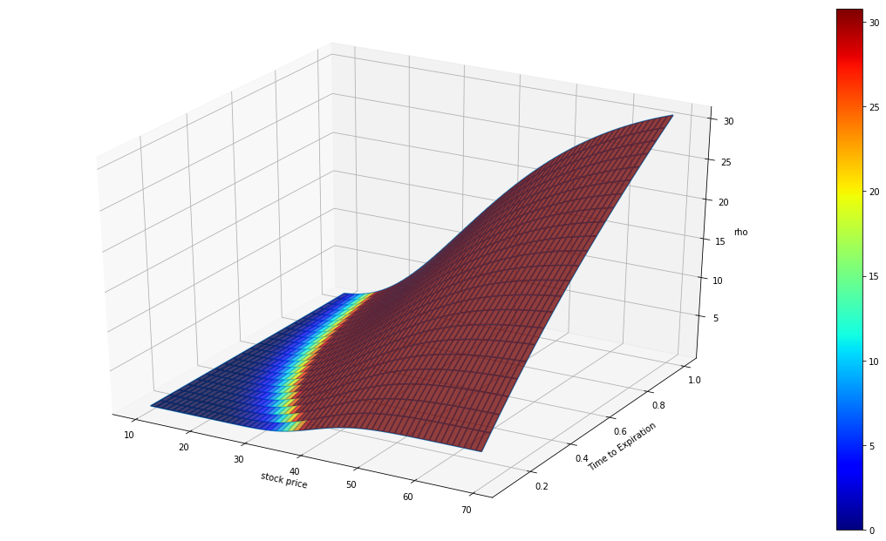

<div class="page" title="Page 87">
<div class="layoutArea">
<div class="column">
<h2>Introduction</h2>
Option Greeks measure the different factors such as the underlying price, time and volatility that affect the price of an option contract. In this tutorial we will discuss the various Greeks, their meanings and their implications on the pricing and how to use them to hedge risks.
<h3>1. Delta</h3>
<h4>Definition</h4>
<div class="page" title="Page 425">
<div class="layoutArea">
<div class="column">

Delta is the rate of change of the option price with respect to the price of the underlying asset. It measures the first-order sensitivity of the price to a movement in stock price S. The option delta is 0.4 means that if the underlying moves by for example 1%, then the value of the option will move by 0.4 × 1%. For European options on an asset that provides a yield at rate q:
\[delta(call)=\frac{\partial c}{\partial S}=e^{-q(T-t)}N(d1)\]
\[delta(put)=\frac{\partial p}{\partial S}=e^{-q(T-t)}(N(d1)-1)\]
<pre class="prettyprint linenums">''' Greek letters for European options on an asset that provides a yield at rate q '''
def delta(self):
    d1 = self.d1()
    if self.type == "c":
        return exp(-self.q * self.T) * self.n(d1)
    elif self.type == "p":
        return exp(-self.q * self.T) * (self.n(d1)-1)</pre>
<h4>Impact Factors</h4>
Stock price, days remaining to expiration and implied volatility will impact the Delta.
<ul>
 	<li><strong>Stock Price: </strong>Call option has a positive Delta range from 0 to 1. The Delta is positively correlated to underlying stock price change. While put option has a negative Delta ranges from -1 to 0, its Delta is negatively correlated with the underlying stock price change. At-the-money call options usually have a Delta near .50. At-the-money put options have a Delta near -.50.</li>
 	<li><strong>Implied Volatility:</strong> Low implied volatility stocks will tend to have higher Delta for the in-the-money options and lower Delta for out-of-the-money options.</li>
 	<li><strong>Days remaining to expiration:</strong> As expiration nears, in-the-money call Deltas increase toward 1.00, at-the-money call Deltas remain at around 0.5 and out-of-the-money call Deltas fall to 0 provided other inputs remain constant.</li>
</ul>
As a general rule, in-the-money options will move more than out-of-the-money options, and short-term options will react more than longer-term options to the same price change in the stock.

In order to demonstrate how those Greeks values change with the time to expiration and the underlying price, we choose 60*23 call options contracts with the stock price ranging from 10 to 70, time to expiration ranging from 0 to 1 year. The strikes of all the contracts are 40,  the interest rates are 0.1, the volatilities are all 0.5. We construct the contracts data as a 23*60 matrix.
<pre class="prettyprint linenums">s = np.array([range(10,70,1) for i in range(23)])
I = np.ones((shape(s)))
time = arange(1,12.5,0.5)/12
T = np.array([ele for ele in time for i in range(shape(s)[1])]).reshape(shape(s))

contracts = []
for i in range(shape(s)[0]):
    for j in range(shape(s)[1]):
        contracts.append(BsmModel('c',s[i,j],40*I[i,j],0.1*I[i,j], T[i,j],0.5*I[i,j]))
delta = [x.theta() for x in contracts]
gamma = [x.gamma() for x in contracts]
delta = [x.delta() for x in contracts]
vega = [x.vega() for x in contracts]
rho = [x.rho() for x in contracts]

gamma = np.array(gamma).reshape(shape(s))
delta = np.array(delta).reshape(shape(s))
theta = np.array(theta).reshape(shape(s))
vega = np.array(vega).reshape(shape(s))
rho = np.array(rho).reshape(shape(s))

import numpy as np
import matplotlib.pyplot as plt
from mpl_toolkits.mplot3d import Axes3D
from matplotlib import cm
from matplotlib import animation

z = delta
fig = plt.figure(figsize=(20,11))
ax = fig.add_subplot(111, projection='3d')
ax.view_init(40,290)
ax.plot_wireframe(s, T, z, rstride=1, cstride=1)
ax.plot_surface(s, T, z, facecolors=cm.jet(delta),linewidth=0.001, rstride=1, cstride=1, alpha = 0.75)
ax.set_zlim3d(0, z.max())
ax.set_xlabel('stock price')
ax.set_ylabel('Time to Expiration')
ax.set_zlabel('delta')
m = cm.ScalarMappable(cmap=cm.jet)
m.set_array(z)
cbar = plt.colorbar(m)
</pre>


The color of the graph above represents delta value.
<h3>2. Gamma</h3>
Gamma is the rate of change of the portfolio's delta with respect to the underlying asset's price. It represents the second-order sensitivity of the option to a movement in the underlying asset’s price.

Long options, either calls or puts, always yield positive Gamma. Gamma is higher for options that are at-the-money and closer to expiration because the Delta of the near term options move toward either 0 or 1.00 is imminent. Deeper-in-the-money or farther-out-of-the-money options have lower Gamma as their Deltas already approached 0 or 1.00 (or 0 or -1.00 for puts) and will not change as quickly with movement in the underlying. For European options:
\[gamma(call)=gamma(put)=\frac{N^{'}(d_1)e^{-q(T-t)}}{S\sigma\sqrt{(T-t)}}\]
<pre class="prettyprint linenums">def gamma(self):
    d1 = self.d1()
    dn1 = self.dn(d1)
    return dn1 * exp(-self.q * self.T) / (self.s * self.sigma * sqrt(self.T))
</pre>
<pre class="prettyprint linenums">z = gamma
fig = plt.figure(figsize=(20,11))
ax = fig.add_subplot(111, projection='3d')
ax.view_init(12,320)
ax.plot_wireframe(s, T, z, rstride=1, cstride=1)
ax.plot_surface(s, T, z, facecolors=cm.jet(delta),linewidth=0.001, rstride=1, cstride=1, alpha = 0.75)
ax.set_zlim3d(0, z.max())
ax.set_xlabel('stock price')
ax.set_ylabel('Time to Expiration')
ax.set_zlabel('gamma')
m = cm.ScalarMappable(cmap=cm.jet)
m.set_array(delta)
cbar = plt.colorbar(m)
</pre>


The color of the graph above represents delta value.
<h3>3. Vega</h3>
<div class="page" title="Page 438">
<div class="layoutArea">
<div class="column">

The Vega is the rate of change in the value of the option with respect to the volatility of the underlying asset.

Vega is always positive for long positions and is the same value for both puts and calls. Hence the option price always increases as the volatility increases. Vega for the European options:
\[vega(call)=vega(put)=S\sqrt{(T-t)}N^{'}(d_1)e^{-q(T-t)}\]
<pre class="prettyprint linenums">def vega(self):
    d1 = self.d1()
    dn1 = self.dn(d1)
    return self.s * sqrt(self.T) * dn1 * exp(-self.q * self.T)
</pre>
<pre class="prettyprint linenums">z = vega
norm = matplotlib.colors.Normalize()
fig = plt.figure(figsize=(20,11))
ax = fig.add_subplot(111, projection='3d')
ax.view_init(20,45)
ax.plot_wireframe(s, T, z, rstride=1, cstride=1)
ax.plot_surface(s, T, z, facecolors=cm.jet(norm(z)),linewidth=0.001, rstride=1, cstride=1, alpha = 0.9)
ax.set_zlim3d(z.min(), z.max())
ax.set_xlabel('stock price')
ax.set_ylabel('Time to Expiration')
ax.set_zlabel('vega')
m = cm.ScalarMappable(cmap=cm.jet)
m.set_array(z)
cbar = plt.colorbar(m)
</pre>
</div>
</div>
<h3> </h3>
The color of the graph above represents Vega.
<h3>4. Theta</h3>
<div class="page" title="Page 432">
<div class="layoutArea">
<div class="column">

Theta is the rate of change of the value of the option with respect to the passage of time. It is also referred to as the time decay of the portfolio.

The theta of  holding long position of a call or a put option is usually negative. An option that loses 0.1% per day is said to have a Theta of −0.1%. For example, if we buy an OTM call option, the value of this call option decreases as time passes since the option has less time to expiry. If time passes with the price of the underlying asset and its volatility remaining the same, the passing of time will lower the value of the option. Theta for European Options
\[Theta(call)=-SN^{'}(d_1)\sigma e^{-q(T-t)}/(2\sqrt{T-t})+qSN(d_1)e^{(-q(T-t))}-rKe^{-r(T-t)}N(d_2)\]
\[Theta(put)=-SN^{'}(d_1)\sigma e^{-q(T-t)}/(2\sqrt{T-t})-qSN(-d_1)e^{(-q(T-t))}+rKe^{-r(T-t)}N(-d_2)\]
<pre class="prettyprint linenums">def theta(self):
    d1 = self.d1()
    d2 = d1 - self.sigma * sqrt(self.T)
    dn1 = self.dn(d1)
    if self.type == "c":
        theta = -self.s * dn1 * self.sigma * exp(-self.q*self.T) / (2 * sqrt(self.T)) \
                    + self.q * self.s * self.n(d1) * exp(-self.q*self.T) \
                    - self.r * self.k * exp(-self.r*self.T) * self.n(d2)
        return theta
    elif self.type == "p":
        theta = -self.s * dn1 * self.sigma * exp(-self.q * self.T) / (2 * sqrt(self.T)) \
                    - self.q * self.s * self.n(-d1) * exp(-self.q * self.T) \
                    + self.r * self.k * exp(-self.r * self.T) * self.n(-d2)
        return theta
</pre>
<pre class="prettyprint linenums">z = theta
# facecolors aren't normalizing as might be expected
# we need to normalize it to avoid all dark color for value under 0
norm = matplotlib.colors.Normalize()
fig = plt.figure(figsize=(20,11))
ax = fig.add_subplot(111, projection='3d')
ax.view_init(35,300)
ax.plot_wireframe(s, T, z, rstride=1, cstride=1)
ax.plot_surface(s, T, z, facecolors=cm.jet(norm(z)),linewidth=0.001, rstride=1, cstride=1, alpha = 0.9)
ax.set_zlim3d(z.min(), z.max())
ax.set_xlabel('stock price')
ax.set_ylabel('Time to Expiration')
ax.set_zlabel('rho')
m = cm.ScalarMappable(cmap=cm.jet)
m.set_array(z)
cbar = plt.colorbar(m)
</pre>
<h3> </h3>
<h3>5. Rho</h3>
Rho is the rate of change of the value of a derivative with respect to the interest rate. It is usually small and not a big issue in practice unless the option is deep in-the-money and has a long horizon. The interest rate would matter because we need to discount a larger cash flow over a longer horizon. Rho for the European options:
\[Rho(call)=K(T-t)e^{-r(T-t)}N(d_2)\]
\[Rho(put)=-K(T-t)e^{-r(T-t)}N(-d_2)\]
<pre class="prettyprint linenums">def rho(self):
    d2 = self.d2()
    if self.type == "c":
        rho = self.k * self.T * (exp(-self.r*self.T)) * self.n(d2)
    elif self.type == "p":
        rho = -self.k * self.T * (exp(-self.r*self.T)) * self.n(-d2)
    return rho
</pre>
<pre class="prettyprint linenums">z = rho
norm = matplotlib.colors.Normalize()
fig = plt.figure(figsize=(20,11))
ax = fig.add_subplot(111, projection='3d')
ax.view_init()
ax.plot_wireframe(s, T, z, rstride=1, cstride=1)
ax.plot_surface(s, T, z, facecolors=cm.jet(norm(z)),linewidth=0.001, rstride=1, cstride=1, alpha = 0.9)
ax.set_zlim3d(z.min(), z.max())
ax.set_xlabel('stock price')
ax.set_ylabel('Time to Expiration')
ax.set_zlabel('vega')
m = cm.ScalarMappable(cmap=cm.jet)
m.set_array(z)
cbar = plt.colorbar(m)
</pre>
<div class="page" title="Page 438">
<div class="layoutArea">
<div class="column">


<h2>Delta, Gamma &amp; Vega Hedging</h2>
The delta of the underlying asset is always 1.0, the trader can hedge his positions by buying or selling the number of shares of the underlying asset indicated by the total delta. However, underlying asset positions have Gamma 0 because their Delta is always 1.00 (long) or -1.00 (short) and will not change. In addition, Vega of the underlying asset is also zero because the underlying asset's payoff doesn't vary depending on how its price moves (payoff is not contingent). Therefore, its price is not affected by price volatility.

As a result, in order to adjust Gamma and Vega, it is necessary to take a position in an option or other derivatives. However, if only one other derivative is added, either the Gamma risk or the Vega risk will be canceled out, but not both at the same time. Here we need to use 2 derivatives to make the portfolio delta, gamma, and vega neutral all at once. Note, Vega and Gamma for a portfolio is the sum of the vegas and Gammas of its constituents.

</div>
</div>
</div>
</div>
</div>
<h2>Algorithm</h2>
Delta is the primary indicator used when monitoring option risk. By taking an opposite position in the underlying instrument equal in size to the option’s delta, people try to protect their positions from market price movements, which we also called making portfolio delta neutral.
<div class="layoutArea">
<div class="column">
<div class="page" title="Page 438">
<div class="layoutArea">
<div class="column">

&nbsp;

</div>
